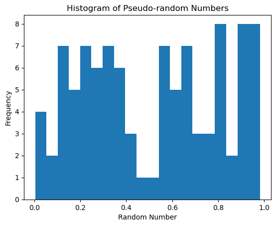
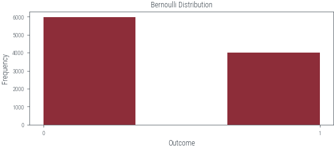
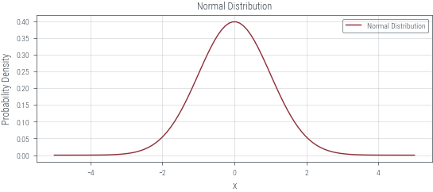
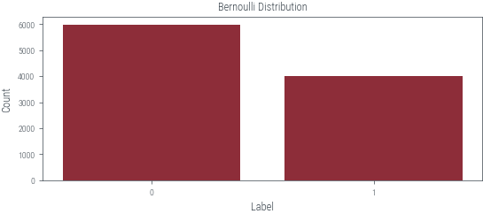

#Important libraries
import numpy as np
import matplotlib.pyplot as plt
import torch
import torch.distributions as dist
import math
from tueplots import bundles
plt.rcParams.update(bundles.beamer_moml())Different Distribution Samples
Bernoulli, Categorical, Uniform, Normal, Beta and Gamma distributions
#pre-defined values
n_samples=10000
seed=42
p=0.4
num_categories=5Generate uniform distribution
# Generate random numbers using PyTorch distribution
distribution = torch.distributions.Uniform(0, 1)
random_numbers = distribution.sample((n_samples,))
# Plot the histogram
plt.hist(random_numbers.numpy(), bins=20)
plt.xlabel('Random Number')
plt.ylabel('Frequency')
plt.title('Histogram of Pseudo-random Numbers')
plt.show()
Generate Bernoulli distribution
from torch.distributions import Bernoulli
# Set the random seed for reproducibility
torch.manual_seed(seed)
p=torch.tensor(p)
# Generate samples from the distribution
Bernoulli_samples = Bernoulli(probs=p,logits=None).sample((n_samples,))
# Plot the histogram
plt.hist(Bernoulli_samples.numpy(), bins=3)
# Add labels and title
plt.xlabel('Outcome')
plt.ylabel('Frequency')
plt.title('Bernoulli Distribution')
# Set x-axis tick labels
plt.xticks([0, 1], ['0', '1'])
# Display the plot
plt.show()

Important things to note
probs: Directly known probability values (0-1), providing a direct interpretation of probabilities.
logits: Log-odds or transformed probabilities (using sigmoid) useful for like LR or NN models outputting logits.
Generate Categorical distribution
from torch.distributions import Categorical
# Create a Categorical distribution with equal probabilities for each category
categorical_distribution = Categorical(torch.ones(num_categories))
categorical_numbers = categorical_distribution.sample((n_samples,))
# Count the occurrences of each category
category_counts = torch.bincount(categorical_numbers)
print(category_counts)
# Compute the probabilities
probabilities = category_counts / n_samples
# Plot the categories with probabilities
plt.bar(range(len(probabilities)), probabilities)
plt.xlabel('Category')
plt.ylabel('Probability')
plt.title('Categorical Distribution')
plt.show()tensor([1953, 1975, 1963, 2038, 2071])
Generate Normal distribution
from torch.distributions import Normal
# Define the mean and standard deviation
mean = torch.tensor([0.0])
stddev = torch.tensor([1.0])
dist = Normal(mean, stddev)
# Generate a range of values for x-axis
x = np.linspace(-5, 5, 100)
# Calculate the corresponding probability density for each x
pdf = torch.exp(dist.log_prob(torch.tensor(x))).numpy()
# Plot the normal distribution
plt.plot(x, pdf, label='Normal Distribution')
plt.xlabel('x')
plt.ylabel('Probability Density')
plt.title('Normal Distribution')
plt.legend()
plt.grid(True)
# Display the plot
plt.show()
Beta distributions
# Set the parameters for the Beta distribution
alpha = 7
beta = 2
# Create a Beta distribution object
beta_dist = torch.distributions.Beta(alpha, beta)
# Generate samples from the distribution
samples = beta_dist.sample((n_samples,))
# Convert samples to numpy array
samples_np = samples.numpy()
# Plot the histogram of samples
plt.hist(samples_np, bins=30, density=True)
# Plot the probability density function (PDF)
x = torch.linspace(0, 1, 1000)
pdf = beta_dist.log_prob(x).exp()
plt.plot(x.numpy(), pdf.numpy(), 'r-', linewidth=2)
plt.xlabel('X')
plt.ylabel('Probability Density')
plt.title('Beta Distribution')
plt.show()
Gamma distrubution
import torch
import matplotlib.pyplot as plt
# Set the parameters for the Gamma distribution
alpha = 2.0
beta = 1.0
# Create a Gamma distribution object
gamma_dist = torch.distributions.Gamma(alpha, beta)
# Generate samples from the distribution
samples = gamma_dist.sample((n_samples,))
# Convert samples to numpy array
samples_np = samples.numpy()
# Plot the histogram of samples
plt.hist(samples_np, bins=30, density=True)
# Plot the probability density function (PDF)
x = torch.linspace(0, 10, 1000)
pdf = gamma_dist.log_prob(x).exp()
plt.plot(x.numpy(), pdf.numpy(), 'r-', linewidth=2)
# Add labels and title
plt.xlabel('X')
plt.ylabel('Probability Density')
plt.title('Gamma Distribution')
# Display the plot
plt.show()
mm
Implementing a pseudo-random number generator (PRNG) - Generates a sequence of numbers that exhibit properties of randomness
Linear Congruential Generator (LCG) is a simple PRNG algorithm - The LCG algorithm is defined by the recurrence relation:
\(X_{n+1} = (a \cdot X_n + c) \mod m\)
- \(X_{n+1}\) is the Next pseudo-random number.
- \(X_n\) is the current pseudo-random number.
- \(a\) is the multiplier , determines the period of the generated number.
- \(c\) is the increment, shifts the generated sequence.
- \(m\) is the modulus, determines the range of values .
Integer Constant
\(m,{0<m}\) — The modulus
\(a,0<a<m\) — The multiplier
\(c,0<=c<m\) — The increment
\(X_{0},0<X_{0}<m\) — The seed / start value
# Function for Linear Congruential Generator
def lcg(seed, n_samples):
"""
Generates a sequence of pseudo-random numbers using the Linear Congruential Generator (LCG) algorithm.
Args:
seed (int): The seed value for the LCG algorithm.
n_samples (int): The number of random numbers to generate.
Returns:
list: A list of pseudo-random numbers normalized to the range [0, 1].
"""
a = 1103515245
c = 12345
m = 2 ** 31
random_numbers = []
for _ in range(n_samples):
seed = (a * seed + c) % m
random_number = seed / m # Normalize to range [0, 1]
random_numbers.append(random_number)
return random_numbersPlot histogram
# Example usage:
random_numbers = lcg(seed, n_samples )
plt.hist(random_numbers, bins=20)
plt.xlabel('Random Number')
plt.ylabel('Frequency')
plt.title('Histogram of Pseudo-random Numbers')
plt.show()
In a uniform distribution, all values have an equal chance of occurring. The graph of this distribution shows bars or lines of equal height for each outcome, creating a rectangular shape. For example, when drawing from a standard deck, the probability of selecting a heart or a spade is 1/4 or 25%.
Using PyTorch
Convert Unifom Sampling to Bernoulli Sampling
we can use the probablity \((p)\) of outcome 1 and \((1-p)\) of outcome 0
Uniform Sampling Each element has an equal probability. Graphically, a rectangular distribution is formed with uniform bars or lines in case of Bernoulli Sampling Two outcomes, success and failure, with associated probabilities (p and (1-p)). Graphically, two bars or lines represent the distribution, one taller than the other.
Function for uniform to Categorical
Plot of Uniform to Categorical distribution
Categorical Distribution multiple outcomes with different probabilities. Example: A fruit survey with apple (P = 0.4), banana (P = 0.3), and orange (P = 0.3). Graphically, bars represent each fruit choice.
Uniform to Normal sampling
Box Muller Method
def uniform_to_normal_boxmuller(n_samples):
"""
Generates a sequence of pseudo-random numbers from a standard normal distribution using the Box-Muller method.
Args:
n_samples (int): The number of random numbers to generate.
Returns:
torch.Tensor: A tensor of pseudo-random numbers following the standard normal distribution.
"""
uniform_distribution = dist.Uniform(0, 1)
random_numbers = []
for _ in range(n_samples // 2):
u1 = uniform_distribution.sample()
u2 = uniform_distribution.sample()
z1 = torch.sqrt(-2 * torch.log(u1)) * torch.cos(2 * math.pi * u2)
z2 = torch.sqrt(-2 * torch.log(u1)) * torch.sin(2 * math.pi * u2)
random_numbers.append(z1)
random_numbers.append(z2)
if n_samples % 2 != 0:
u = uniform_distribution.sample()
z = torch.sqrt(-2 * torch.log(u)) * torch.cos(2 * math.pi * uniform_distribution.sample())
random_numbers.append(z)
return torch.stack(random_numbers)In Normal Distribution Values are symmetrically distributed around a central mean. For example, heights in a population follow a bell-shaped curve, with the most common values near the mean and fewer occurrences as we move away from it. Graphically, it is represented by a bell-shaped curve.